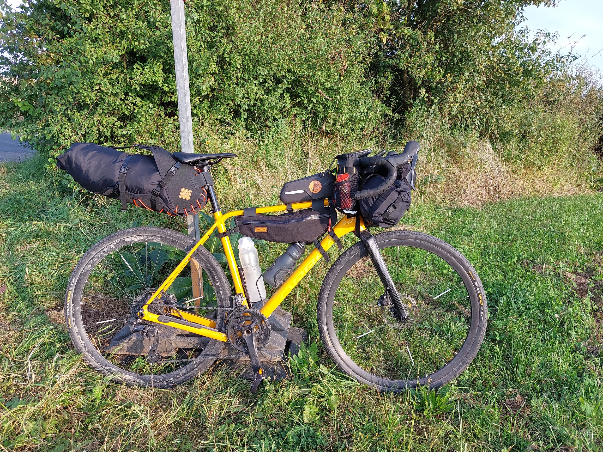
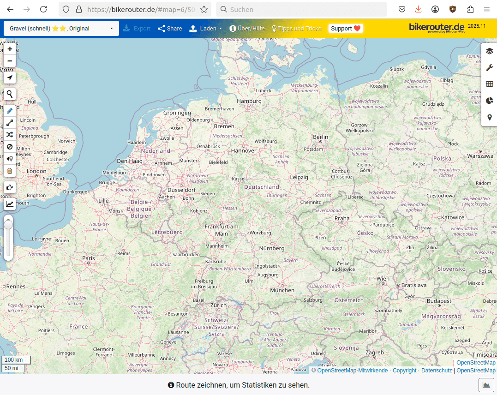
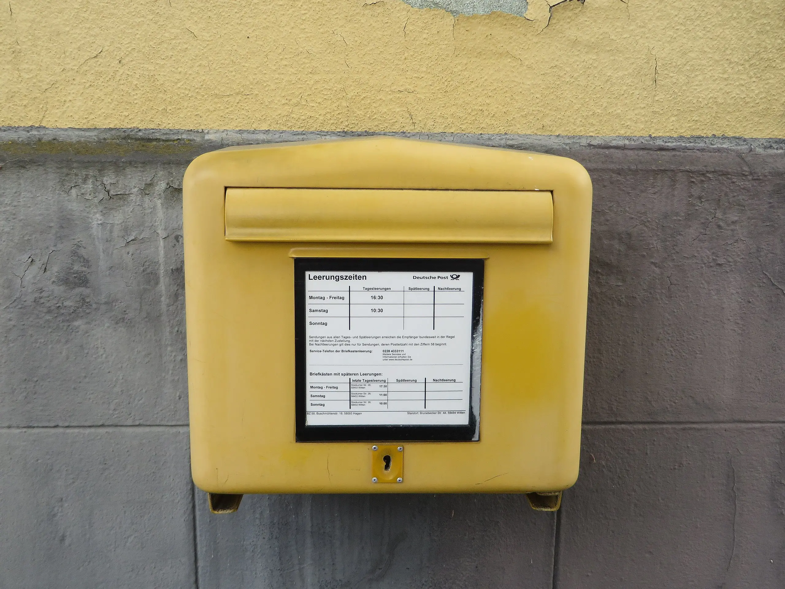
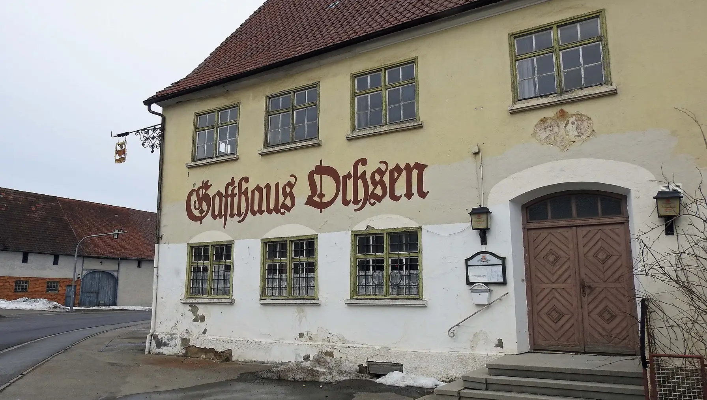
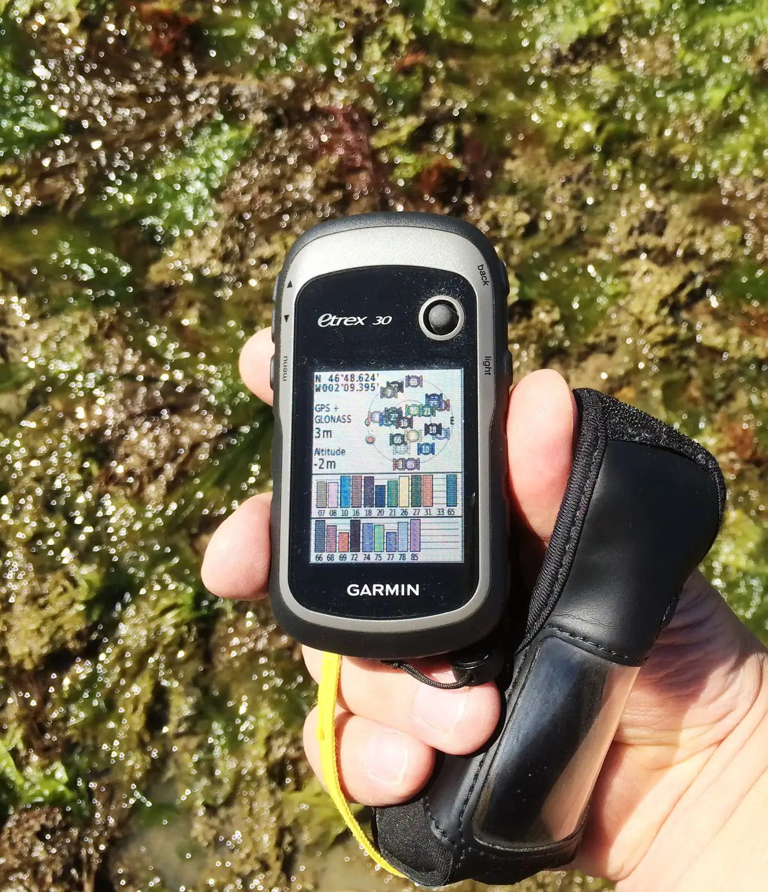

OpenStreetMap ist doch vollständig …
Michael Reichert
FOSSGIS-Konferenz 2025, Münster (Westf.)
Motivation
Wohin?
Notes
^
text !~= "Attached photo(s)"
Fixme
OSM Inspector (https://tools.geofabrik.de/osmi)
Fixme
Alte Fixmes
Oberflächen
in Münster

Oberflächen
bei Ostbevern

Oberflächen
(
way[highway][highway!=track]
[!surface]({{bbox}});
way[highway=track][!tracktype]
[!surface]({{bbox}});
);
out geom;
Fehlende Wirtschaftswege
Fehlende Wirtschaftswege
Fehlende Wirtschaftswege

Fehlende Wanderrouten
Fehlende Wanderrouten
Postbriefkästen
amenity=post_box
in zusammenhängend bebauten Wohngebieten i.d.R. höchstens 1000 m entfernt (§ 17 Abs. 3 PostG)
Postbriefkästen
Gasthöfe
Bild: Flodur63 (CC-BY-SA 4.0)
Breite/Höhe/Gewicht
Bildquellen: CC-BY-SA 4.0 Reinhold Möller (links), Joachim Kohler (rechts)
Brücken ohne Gewichtsangabe
maxweight=*, maxweight:signed=no
Maxheight Map
Mapping per Fahrrad
- 7–8 km/h im Mittelgebirge
- etwas Vespucci/StreetComplete
- Straßeneigenschaften
- draußen: ca. 25 Wegpunkte/Stunde
- Erfahrungswert: 30–60 Wegpunkte/Stunde mit JOSM
Foto-Mapping per Fahrrad
- nur Straßeneigenschaften
- Zeitraffer-Fotoaufnahme, Intervall 5 Sekunden
- 45 km, 17 km/h ohne Pausen, 1900 Fotos
- dünn besiedelt, eine Kleinstadt, keine abzweigenden Wege
- 12 Fotos/Min. draußen → 9 Fotos/Min. in JOSM
Mapping zu Fuß

- 3,3 km/h inkl. Pausen
- Straßeneigenschaften, Wanderrouten, Wegweiser
- draußen: ca. 12 Wegpunkte/Stunde
- JOSM: ca. 22 Wegpunkte/Stunde
rechtes Bild: F1jmm, CC-BY-SA 4.0